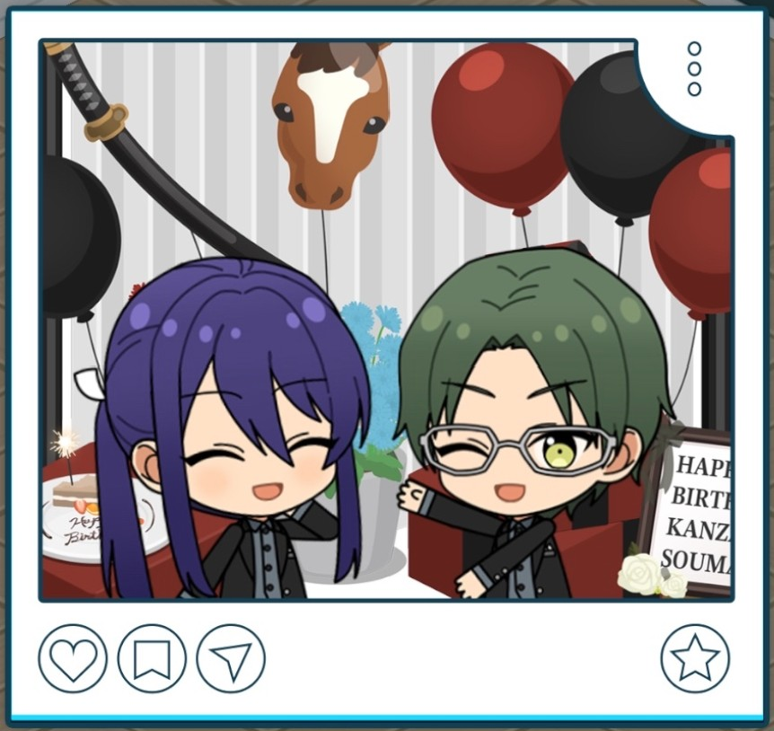
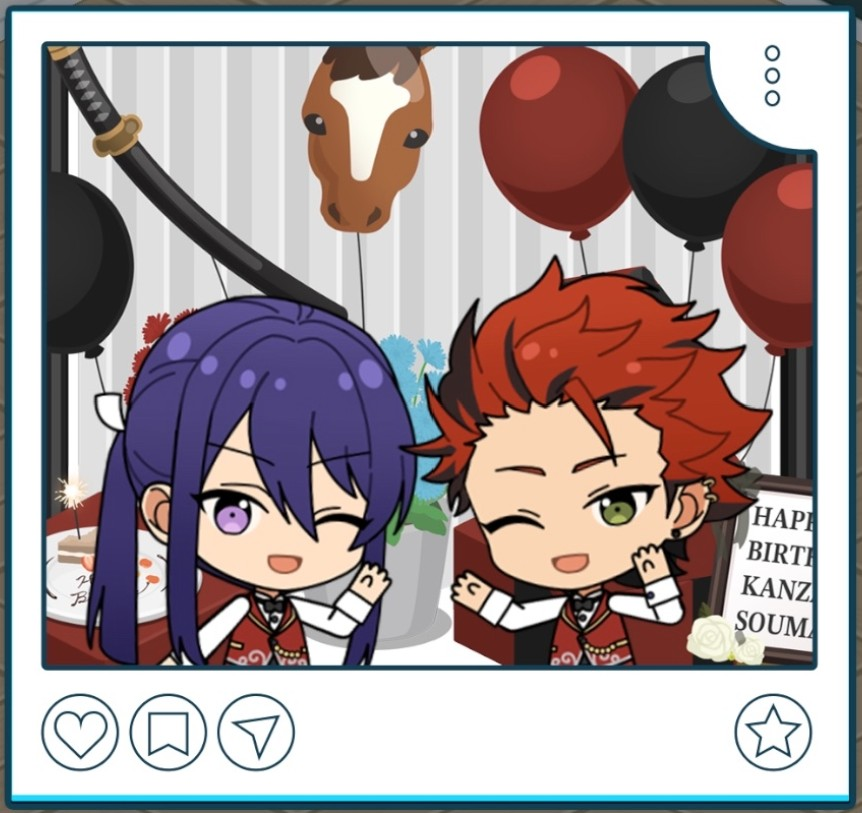
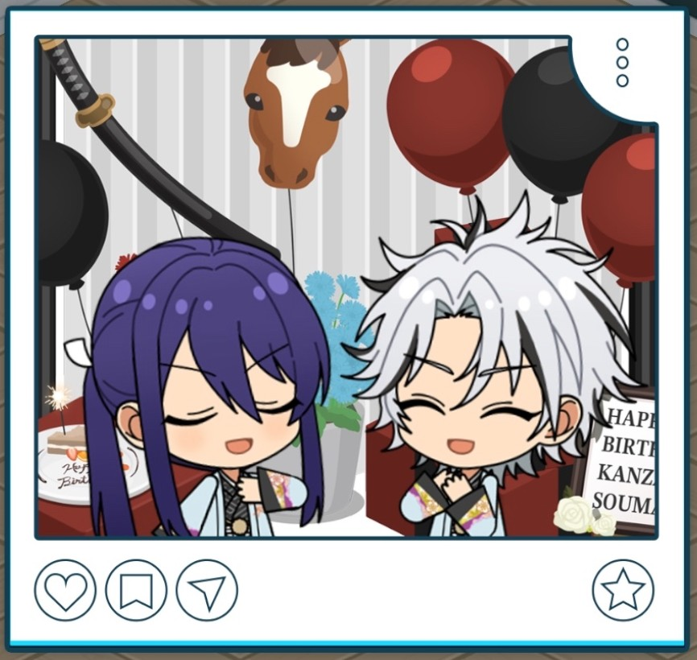
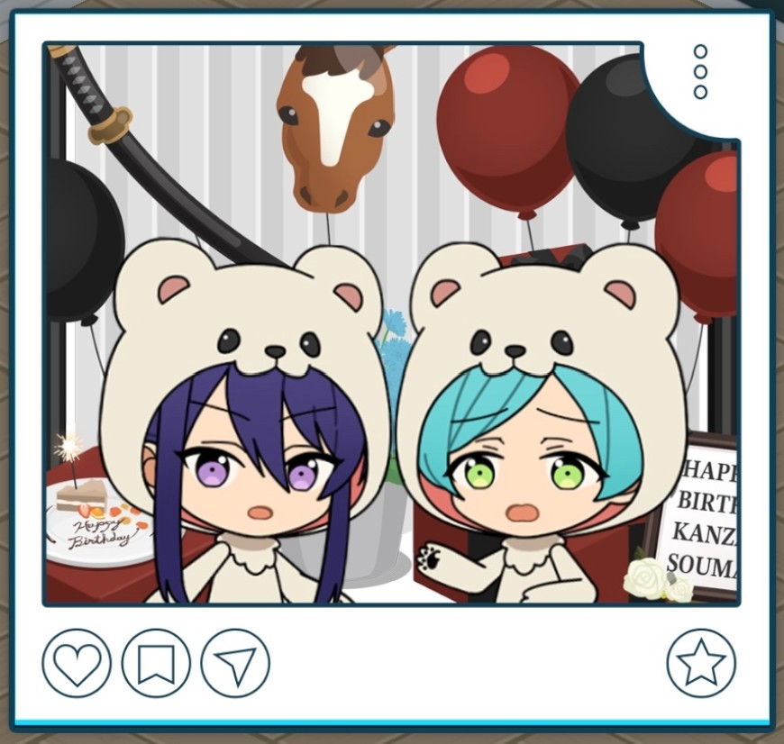

(2025) Souma Kanzaki Birthday

Thank you. Each year, my heart is light with joy when I receive your words of congratulation, “Purodyuusaa”-dono1 ♪
Before the Stream

Anzu-dono. I appreciate you coming to inform me that I was granted permission to demonstrate my martial arts.
Ahh, of course I intend to do so with the utmost attention to safety.
Hm? “Is there anything else you’re worried or concerned about?”
No, actually, everyone in AKATSUKI was kind enough to come with me to conduct a rehearsal for the stream.
They gave me a plethora of advice, so enough of my doubts were able to be resolved.
I want to be sure the actual performance is a success to ensure everyone’s kindness does not go to waste ♪
Starting the Birthday Live Stream

I am deeply grateful from the bottom of my heart that you’ve all come to watch my stream, despite your busy schedules.
At any rate, it seems that quite a lot of people have come and gathered here today. Comments are streaming in one by one.
But please rest easy, for I am catching each and every one of them with my eyes. I shall respond to questions and such from this point on.
Unfortunately, I cannot prepare tea for you all, but please make yourselves at home as if you’ve come to visit my residence ♪
During the Birthday Live Stream 1
Selecting "We want to see your practice-swings."
Hm? Comments like "We want to see your practice-swings," are coming in, hm?
Why, what luck. As a matter of fact, I was hoping there would be an opportunity at some point to show off my martial arts, so I had sought out and received permission beforehand.
I’ve been told that there are no problems as long as I take care to be safe, so I can conduct my practice-swings to my heart’s content.
These are all very precious “re-ku-ests”, after all. I shall fulfill them until your desires are entirely sated…♪
During the Birthday Live Stream 2
Selecting "Take screenshots!"

I am grateful for each and every one of your “re-ku-ests”. I intend to respond to as many as time allows.
Comments that say, “take screenshots!“ have been trickling in several times now.
Understood. If there are any poses or expressions you would like to see me do, will you tell me what they are?
You want a pose where I stand holding my katana? Well then, please take all the "su-kureen-shots" you like until you feel you’ve had your fill…♪
Question and Answer Session
Now begins the time for the “Question Corner.”
I have read through the questions everyone cared to send in. I intend to respond to as many as time allows, so please look forward to it.
This morning… I had fish and pickled cucumber, paired with some white rice and miso soup.
I wanted to store up energy for this stream, so I even had a second helping of rice.
Thanks to that, I have more than enough energy. I will likely have some energy to spare for work afterwards too ♪
Ah, well naturally, it is because everyone cheers me on. I am eternally grateful for it ♪
On top of that… Everyone in AKATSUKI... Hasumi-dono, Kiryu-dono, Ibuki. And working hard alongside all of my “aidoru” comrades...
I cannot allow everyone to see a pathetic side of myself. I shall continue to stay diligent ♪
Lately I have been into sea bream.2 It is currently in season, and its fatty sweetness is quite delicious ♪
What else... You certainly cannot forget tuna either. Whenever I go out for sushi, I always end up ordering it.
Lately, it seems as if unusual toppings have become trendy, but I will never dignify them with my recognition…!
Office Conversations
| Polaroid | Office Line |
|---|---|
 | I am happy to receive your birthday wishes, Hasumi-dono. I wish for you to have yet another wonderful year. |
 | A picture taken together with Kiryu-dono, just the two of us... I hope we make some great memories this year too. |
 | Your growth is the greatest birthday gift of all, Ibuki. Nyahaha! Well, I’ll do my best~ |
 | So you came to celebrate my birthday too, Shinkai-dono! i wanted to see your smiling face, after all ♪ |
Translation Notes
- ↑ In Japanese, words from other languages (such as English) are typically rendered in katakana. However, when Souma uses katakana words, they are all written in hiragana instead, likely to emphasize how he struggles with foreign words. These words are kept as written in hiragana, and put in "quotes".
- ↑ Here, toppings (ネタ) is moreso the ingredient laid on top of the sushi rice. This could be fish, vegetables, egg, or other ingredients.